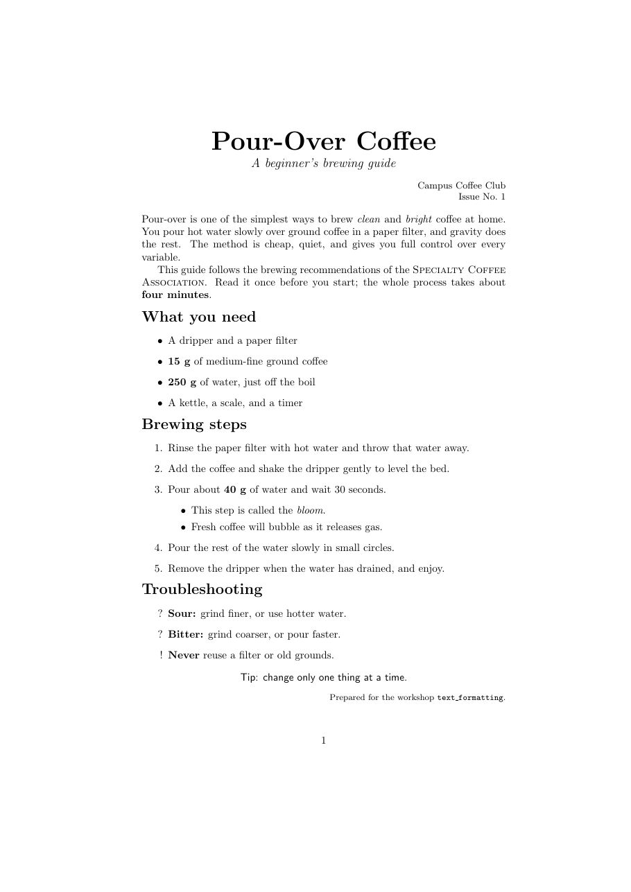

วัตถุประสงค์
เมื่อจบ Workshop นี้ นักศึกษาจะสามารถ
- เขียนไฟล์ LaTeX ด้วยโปรแกรมแก้ไขข้อความ และคอมไพล์เป็น PDF ด้วยคำสั่ง
pdflatexในเทอร์มินัลได้ - อ่านข้อความผิดพลาดจากเทอร์มินัลและไฟล์
.logแล้วหาบรรทัดที่ผิดได้ - แบ่งย่อหน้า ขึ้นบรรทัดใหม่ จัดแนวข้อความ (ชิดซ้าย กึ่งกลาง ชิดขวา) และควบคุมการเยื้องย่อหน้าได้
- เน้นข้อความด้วยตัวหนา ตัวเอียง ขีดเส้นใต้ small caps และเปลี่ยนขนาดและตระกูลแบบอักษรได้
- สร้างรายการแบบ
itemizeและenumerateรายการซ้อน และกำหนดป้ายกำกับเองได้
ไฟล์ที่ได้รับ
ดาวน์โหลด text_formatting.zip แล้วแตกไฟล์ (Extract) ไว้ในที่ที่หาง่าย เช่น Desktop จะได้โฟลเดอร์ text_formatting ดังนี้
text_formatting/
├── doc.pdf ชิ้นงานต้นแบบที่ต้องทำให้เหมือน
├── warmup.tex ไฟล์สั้น ๆ สำหรับ Part A
├── main.tex ไฟล์เริ่มต้นสำหรับ Part B
└── content.txt เนื้อหาทั้งหมดของ Part B ไม่ต้องพิมพ์ใหม่ดูไฟล์แยกทีละไฟล์ได้ที่
warmup.tex,
main.tex,
content.txt
เตรียมเครื่อง
ประมาณ 10 นาทีต้องติดตั้งระบบ LaTeX, Sublime Text และโปรแกรมอ่าน PDF ให้เรียบร้อยก่อน ตาม Workshop ติดตั้ง LaTeX และเครื่องมือ ส่วนนี้เป็นเพียงการทบทวน
Workshop นี้ ไม่ใช้โปรแกรม IDE สำหรับ LaTeX (เช่น TeXstudio หรือ Overleaf) เพื่อให้เห็นว่าการเรียงพิมพ์เกิดขึ้นอย่างไรจริง ๆ
กล่าวคือ เราเขียนไฟล์ข้อความ .tex ด้วยโปรแกรมแก้ไขข้อความ แล้วสั่งโปรแกรม pdflatex ในเทอร์มินัลให้แปลงเป็น PDF
1. โปรแกรมแก้ไขข้อความ Sublime Text
- ใช้ Sublime Text (ใช้ได้ทั้ง Windows, macOS และ Linux) เปิดโฟลเดอร์
text_formattingด้วยเมนู File → Open Folder - ยังไม่ต้องติดตั้งแพ็กเกจเสริมที่คอมไพล์ LaTeX ให้อัตโนมัติ (เช่น LaTeXTools)
- เปิดการตัดบรรทัดอัตโนมัติด้วยเมนู View → Word Wrap เพื่ออ่านย่อหน้ายาว ๆ ได้ง่าย
- บันทึกไฟล์ (Ctrl+S หรือ ⌘+S) ทุกครั้งก่อนคอมไพล์ เพราะ
pdflatexอ่านไฟล์ที่บันทึกไว้บนดิสก์เท่านั้น
2. เปิดเทอร์มินัลในโฟลเดอร์ text_formatting
Windows
เปิดโฟลเดอร์ text_formatting ใน File Explorer คลิกที่แถบที่อยู่ (address bar) พิมพ์ powershell แล้วกด Enter
PS> pdflatex --version
MiKTeX-pdfTeX ... (MiKTeX ...)
PS> dirถ้าใช้ Windows ให้เปิดการแสดงนามสกุลไฟล์ใน File Explorer ที่เมนู View → Show → File name extensions เพื่อไม่ให้เผลอบันทึกเป็น main.tex.txt
macOS
เปิดแอป Terminal พิมพ์ cd ตามด้วยเว้นวรรค แล้วลากโฟลเดอร์ text_formatting จาก Finder มาวางในหน้าต่าง Terminal แล้วกด Enter
$ pdflatex --version
pdfTeX 3.141592653-2.6-1.40.29 (TeX Live 2026)
$ lsLinux
เปิด Terminal แล้วไปที่โฟลเดอร์ด้วย cd เช่น cd ~/Desktop/text_formatting
$ pdflatex --version
pdfTeX 3.141592653-2.6-1.40.29 (TeX Live 2026)
$ lsถ้า pdflatex --version แสดงรุ่นของโปรแกรม แปลว่าพร้อมใช้งาน ถ้าขึ้นว่าไม่รู้จักคำสั่ง ให้ดูหัวข้อข้อผิดพลาดที่พบบ่อย
ส่วน ls หรือ dir ต้องแสดงไฟล์ doc.pdf, warmup.tex, main.tex และ content.txt
3. เปิดไฟล์ PDF
Windows
ติดตั้ง SumatraPDF และตั้งเป็นโปรแกรมเปิด PDF ค่าเริ่มต้น (คลิกขวาที่ไฟล์ PDF → Open with → Choose another app → เลือก SumatraPDF → Always) จากนั้นเปิดไฟล์ด้วยคำสั่ง
PS> start warmup.pdfSumatraPDF ไม่ล็อกไฟล์และโหลดไฟล์ใหม่ให้เองทุกครั้งที่คอมไพล์ซ้ำ ส่วน Adobe Acrobat จะล็อกไฟล์ไว้ ทำให้คอมไพล์ครั้งต่อไปไม่ได้ (ดูข้อผิดพลาด I can't write on file)
macOS
ใช้โปรแกรมอ่าน PDF ค่าเริ่มต้นของเครื่อง (Preview)
$ open warmup.pdfPreview จะโหลดไฟล์ใหม่ให้เองเมื่อคอมไพล์ซ้ำ
Linux
ใช้โปรแกรมอ่าน PDF ค่าเริ่มต้นของระบบ
$ xdg-open warmup.pdfpdflatex ชื่อไฟล์.tex ในเทอร์มินัล → ดู PDF
(กดลูกศรขึ้น ↑ ในเทอร์มินัลเพื่อเรียกคำสั่งเดิมโดยไม่ต้องพิมพ์ใหม่)
อุ่นเครื่อง
ประมาณ 25 นาทีใช้ไฟล์ warmup.tex ทำทีละข้อ บันทึก คอมไพล์ และสังเกตผลทุกครั้งที่แก้ไข
- A0 คอมไพล์ครั้งแรก ในเทอร์มินัลพิมพ์
แล้วใช้$ pdflatex warmup.texls(หรือdir) ดูรายชื่อไฟล์อีกครั้ง จะมีไฟล์ใหม่ 3 ไฟล์ ได้แก่warmup.aux,warmup.logและwarmup.pdfเปิดwarmup.pdfดูผล และเปิดwarmup.logใน Sublime Text ดูว่ามีอะไรบันทึกไว้บ้าง จากนั้นลบไฟล์.auxและ.logแล้วคอมไพล์ใหม่Windows
PS> del warmup.aux, warmup.logmacOS
$ rm warmup.aux warmup.logLinux
$ rm warmup.aux warmup.logไฟล์ใดเป็นไฟล์ต้นฉบับที่ต้องเก็บไว้ และไฟล์ใดเป็นเพียงผลพลอยได้ที่สร้างใหม่ได้ทุกเมื่อ
- A1 ข้อความ 4 ส่วนในไฟล์แสดงผลเป็นกี่ย่อหน้า
บรรทัดใดในไฟล์ที่ทำให้เกิดย่อหน้าใหม่ และการเว้นวรรคหลายช่องใน
Spaces andให้ผลอย่างไร - A2 ในย่อหน้าแรก ใส่
\\ไว้ท้ายประโยคแรก แล้วเปรียบเทียบกับการเว้นบรรทัดว่างหนึ่งบรรทัดแทนทั้งสองวิธีให้ผลต่างกันอย่างไร (สังเกตการเยื้องของบรรทัดถัดไป)
- A3 ใส่
%หน้าบรรทัดLaTeX then decides how the page should look.แล้วคอมไพล์บรรทัดนั้นหายไปเพราะอะไร
- A4 นำบรรทัด
A short line for alignment practice.ไปใส่ในสภาพแวดล้อมcenterจากนั้นเปลี่ยนเป็นflushrightและflushleft - A5 ใส่
\noindentหน้าย่อหน้าที่สอง แล้วลองลบออก จากนั้นเพิ่ม\setlength{\parindent}{0pt}ในส่วนนำ (ก่อน\begin{document})คำสั่งทั้งสองต่างกันอย่างไร
- A6 ในประโยค
My favourite drinks are ...ทำคำว่าcoffeeเป็นตัวหนาteaเป็นตัวเอียง และcocoaขีดเส้นใต้ จากนั้นลองขนาด{\tiny ...},{\Large ...},{\Huge ...}และตระกูลอักษร{\sffamily ...},{\ttfamily ...} - A7 เปลี่ยนประโยคเดียวกันเป็นรายการ
itemize3 ข้อ แล้วเปลี่ยนเป็นenumerateและกำหนดป้ายของข้อสุดท้ายเป็น!ด้วย\item[!] - A8 ทำให้ผิดโดยตั้งใจ เปลี่ยน
\textbfเป็น\textbffแล้วคอมไพล์ เทอร์มินัลจะหยุดและแสดง! Undefined control sequence. l.18 My favourite drinks are \textbff {coffee}, tea, and cocoa. ?- บรรทัดที่ขึ้นต้นด้วย
!คือชนิดของข้อผิดพลาด l.18คือหมายเลขบรรทัดในไฟล์ และข้อความถูกตัดตรงตำแหน่งที่ LaTeX อ่านถึงพอดี (หมายเลขบรรทัดของแต่ละคนอาจไม่ตรงกับตัวอย่าง)- ที่เครื่องหมาย
?ให้พิมพ์ x แล้วกด Enter เพื่อหยุดการคอมไพล์
}หลังcoffeeออกแทน คอมไพล์อีกครั้งโดยสั่งให้ LaTeX ไม่หยุดถาม และเลิกทำงานทันทีเมื่อพบข้อผิดพลาดแรก$ pdflatex -interaction=nonstopmode -halt-on-error warmup.texข้อความผิดพลาดที่ได้คืออะไร และทำไมจึงไม่บอกหมายเลขบรรทัดที่ลืมวงเล็บ (เปิดดูใน
อย่าลืมแก้ไฟล์กลับให้คอมไพล์ผ่านก่อนไปต่อwarmup.logได้) - บรรทัดที่ขึ้นต้นด้วย
pdflatex สร้างไฟล์อะไรบ้าง (2) บรรทัดว่างกับ \\ ต่างกันอย่างไร
(3) \noindent กับ \parindent ต่างกันอย่างไร และ (4) เมื่อเจอ ? ในเทอร์มินัลต้องทำอย่างไร
งานหลัก
ประมาณ 60 นาทีเปิด main.tex และคัดลอกเนื้อหาจาก content.txt มาวาง เพื่อสร้างเอกสารให้เหมือน doc.pdf มากที่สุด คอมไพล์ด้วย
$ pdflatex main.tex
คำแนะนำ
ทำทีละส่วนจากบนลงล่าง และคอมไพล์ทุกครั้งที่ทำเสร็จหนึ่งส่วน ข้อผิดพลาดจะได้อยู่ในส่วนที่เพิ่งเขียนเสมอ ตารางนี้บอกเฉพาะสิ่งที่ต้องใช้ ส่วนวิธีเขียนให้หาจากสไลด์ของบทเรียนหรือจากที่ทดลองใน Part A
| ส่วนของชิ้นงาน | สิ่งที่ต้องใช้ |
|---|---|
ชื่อเรื่อง Pour-Over Coffee | จัดกึ่งกลาง, ขนาดใหญ่ที่สุด, ตัวหนา |
คำบรรยาย A beginner's brewing guide | ขนาดใหญ่, ตัวเอียง, ขึ้นบรรทัดใหม่ใต้ชื่อเรื่อง |
Campus Coffee Club / Issue No. 1 | จัดชิดขวา, ขนาดเล็ก |
| ย่อหน้าที่ 1 | ไม่มีการเยื้อง, คำว่า clean และ bright เน้นด้วย \emph |
| ย่อหน้าที่ 2 | เยื้องตามปกติ, Specialty Coffee Association เป็น small caps, four minutes ตัวหนา |
หัวข้อ What you need, Brewing steps, Troubleshooting | ไม่มีการเยื้อง, ขนาดใหญ่, ตัวหนา (ยังไม่ใช้ \section ซึ่งจะเรียนใน Workshop โครงสร้างเอกสารประเภทบทความ) |
| รายการอุปกรณ์ | itemize, ปริมาณเป็นตัวหนา |
| ขั้นตอนการชง | enumerate ที่มี itemize ซ้อนอยู่ในข้อ 3 |
| Troubleshooting | itemize ที่ใช้ป้ายกำกับเอง ?, ?, ! |
Tip: ... | จัดกึ่งกลาง, แบบอักษรไม่มีเชิง (sans serif) |
Prepared for the workshop text_formatting. | จัดชิดขวา, ขนาดเล็กมาก, text_formatting เป็นแบบอักษรพิมพ์ดีด (ขีดล่างเป็นอักขระพิเศษ เขียนเป็น \_) |
คำใบ้เพิ่มเติม (เปิดดูเมื่อติด)
- ระยะห่างก่อนหัวข้อแรกสร้างได้ด้วย
\vspace{1em} - เมื่อเปลี่ยนขนาดหรือตระกูลอักษรด้วยคำสั่งแบบ "สวิตช์" (เช่น
\Large,\sffamily) ให้ครอบด้วยวงเล็บปีกกา{...}เพื่อไม่ให้ผลกระทบข้อความส่วนอื่น - ชิ้นงานต้องมี 1 หน้า ถ้าล้นไปหน้าที่ 2 ให้ตรวจว่ามีการเว้นบรรทัดหรือระยะห่างเกินมาหรือไม่
- บรรทัดสุดท้ายของผลลัพธ์ในเทอร์มินัลบอกจำนวนหน้า เช่น
Output written on main.pdf (1 page, ...)
ส่งงาน
เปลี่ยนชื่อไฟล์เป็น text_formatting_<รหัสนักศึกษา>.tex แล้วคอมไพล์ใหม่ด้วยชื่อนั้น จะได้ PDF ชื่อเดียวกันโดยอัตโนมัติ ส่งทั้งไฟล์ .tex และ .pdf
$ pdflatex text_formatting_6512345678.texรายการตรวจสอบก่อนส่ง
ท้าทาย
ไม่บังคับ · ประมาณ 20–30 นาทีทำเพิ่มในไฟล์ใหม่ (คัดลอกจากงาน Part B) ข้อใดก็ได้
- C1 ทำชิ้นงานอีกฉบับให้ทั้งเอกสารเป็นแบบอักษรไม่มีเชิง และไม่มีการเยื้องย่อหน้าเลยทุกย่อหน้า โดยแก้เพียง 2 บรรทัดในส่วนนำหรือต้นเอกสาร
- C2 ในขั้นตอนที่ 5 เพิ่มรายการย่อยแบบ
enumerate2 ข้อตัวเลขของรายการระดับที่สองแสดงเป็นรูปแบบใด
- C3 ลองเปลี่ยนป้ายกำกับใน Troubleshooting เป็นคำยาว ๆ เช่น
\item[Sour?]ผลลัพธ์ผิดปกติอย่างไร และเหตุใดต้นแบบจึงเลือกใช้ป้ายสั้น
- C4 สร้างเอกสาร 1 หน้าของตัวเองเป็นภาษาอังกฤษ เช่น สูตรอาหาร คู่มือเกม หรือประกาศของชมรม โดยใช้ทุกเทคนิคใน Workshop นี้อย่างน้อยอย่างละ 1 ครั้ง
ข้อผิดพลาดที่พบบ่อย
| อาการ | สาเหตุและวิธีแก้ |
|---|---|
'pdflatex' is not recognized ... (Windows) หรือ command not found: pdflatex |
ยังไม่ได้ติดตั้งระบบ LaTeX (ดู Workshop ติดตั้ง LaTeX และเครื่องมือ) หรือเปิดเทอร์มินัลไว้ก่อนติดตั้งเสร็จ ให้ปิดแล้วเปิดเทอร์มินัลใหม่ ถ้ายังไม่ได้ให้รีสตาร์ตเครื่อง |
! I can't find file `main.tex'. |
เทอร์มินัลไม่ได้อยู่ในโฟลเดอร์ของไฟล์ (ตรวจด้วย ls หรือ dir แล้ว cd ให้ถูก) หรือไฟล์ถูกบันทึกเป็น main.tex.txt |
! I can't write on file `main.pdf'. |
ไฟล์ PDF เปิดค้างอยู่ในโปรแกรมที่ล็อกไฟล์ (เช่น Adobe Acrobat) ให้ปิดไฟล์ก่อน แล้วใช้ SumatraPDF ตามที่ตั้งไว้ในขั้นเตรียมเครื่อง |
เทอร์มินัลค้างที่ ? |
LaTeX พบข้อผิดพลาดและรอคำสั่ง พิมพ์ x แล้ว Enter เพื่อหยุด |
เทอร์มินัลค้างที่ * |
ไฟล์จบโดยไม่มี \end{document} LaTeX จึงรอให้พิมพ์ต่อ พิมพ์ \stop แล้วกด Enter จากนั้นเพิ่ม \end{document} ท้ายไฟล์ |
No pages of output. |
ในไฟล์ยังไม่มีเนื้อหาที่พิมพ์ได้ (เช่น main.tex ก่อนเริ่มงาน) จึงไม่มี PDF ไม่ใช่ข้อผิดพลาด |
| ผลลัพธ์ไม่เปลี่ยนตามที่แก้ | ลืมบันทึกไฟล์ก่อนคอมไพล์ หรือคอมไพล์ไฟล์ผิดชื่อ |
! Undefined control sequence. |
สะกดชื่อคำสั่งผิด เช่น \textbff หรือ \nonindent ดูหมายเลขบรรทัดหลัง l. |
! File ended while scanning use of \textbf . หรือข้อความทั้งหน้ากลายเป็นตัวหนา |
ลืมปิดวงเล็บปีกกา } |
! LaTeX Error: \begin{itemize} on input line 12 ended by \end{document}. |
ลืม \end{itemize} หรือสะกดชื่อสภาพแวดล้อมไม่ตรงกัน |
Underfull \hbox (badness 10000) |
ใช้ \\ ท้ายย่อหน้าหรือก่อนบรรทัดว่าง ให้ใช้บรรทัดว่างแทน (เป็นคำเตือน ไม่ใช่ข้อผิดพลาด) |
| ข้อความบางส่วนหายไป หรือเกิดข้อผิดพลาดแปลก ๆ | ในข้อความมีอักขระพิเศษ % $ & # _ { } ~ ^ \ ต้องเขียนเป็น \%, \$, \&, \#, \_ เป็นต้น |
| เครื่องหมายคำพูดกลับด้าน (”...”) | ใน LaTeX ให้เปิดด้วย `` (ปุ่มเดียวกับ ~) และปิดด้วย '' เช่น ``coffee'' |
| การเปลี่ยนขนาดอักษรลามไปทั้งเอกสาร | ใช้ \Large โดยไม่ครอบด้วย {...} |
แหล่งอ้างอิง
- สไลด์บทเรียน Formatting Text
- The Not So Short Introduction to LaTeX (เปิดด้วย
texdoc lshort) บทที่ 2 (Typesetting Text)